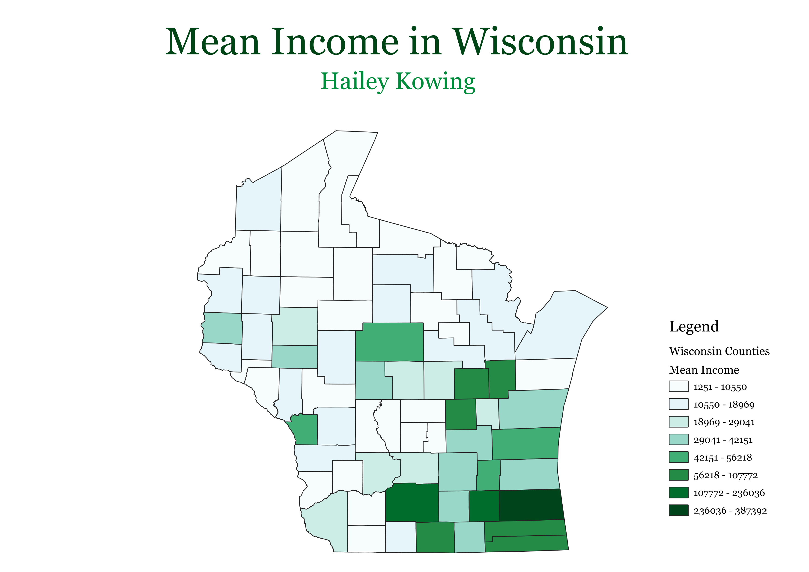

Homework 6: Census Data Choropleth
Hailey Kowing
This is a map of mean income by county in Wisconsin.
Counties closer to major cities tend to have higher mean incomes, whereas more rural counties are defined by lower mean incomes.
For example, Dane County and Milwaukee County include both the capital, Madison, and the most populous city, Milwaukee. They are both characterized by higher mean income.

Data used for this project
CSV dataset
Link to shapefile